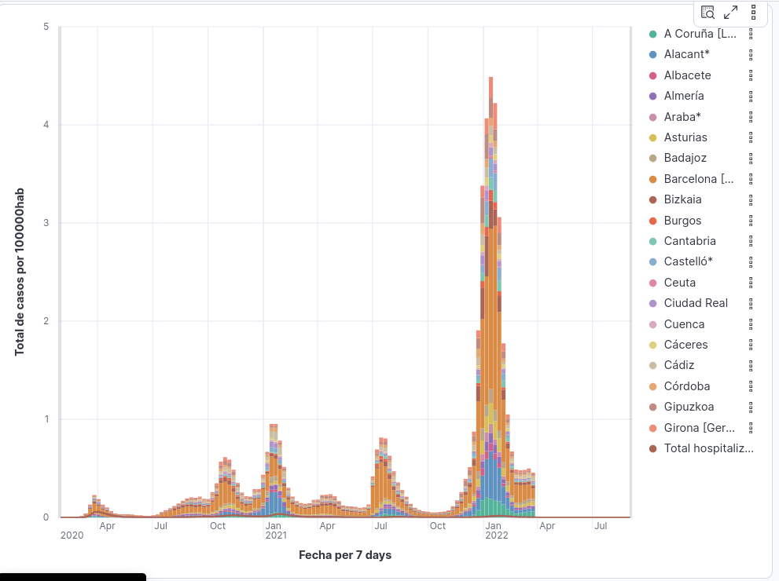
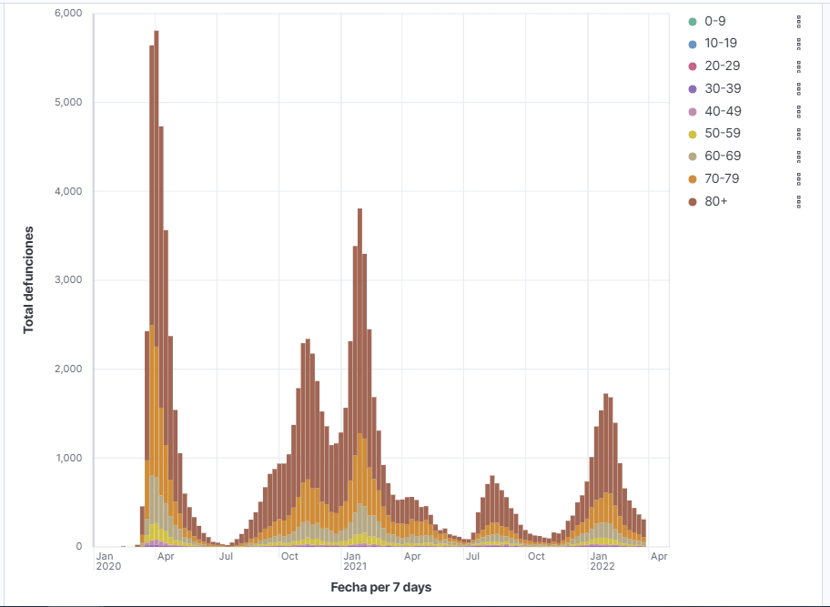
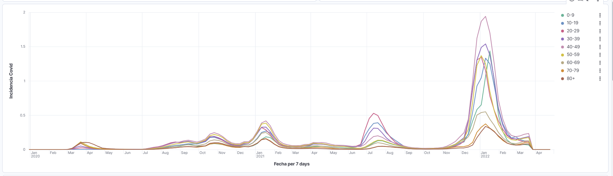
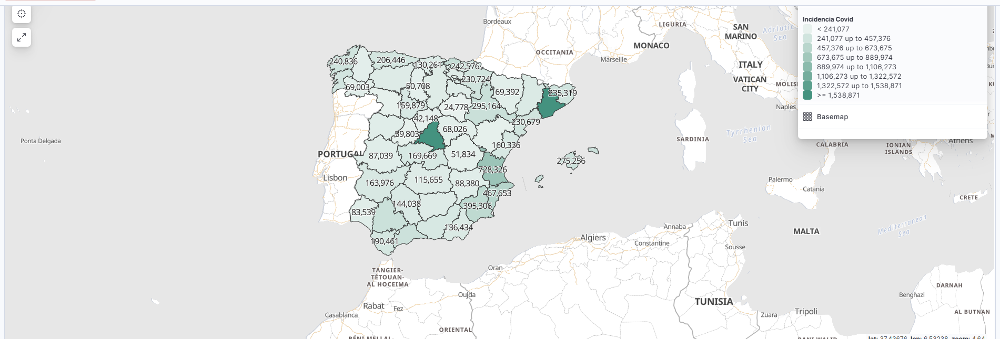
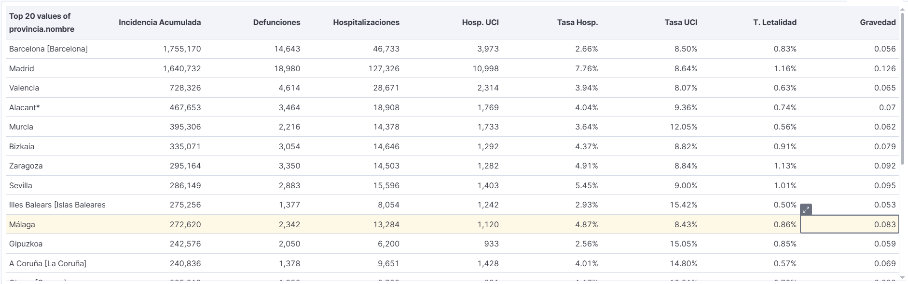

Dashboard Covid
Este documento explica cómo crear en Kibana diferentes Dashboards del caso de uso Covid
Requisitos previos
- Debe existir el índice (o alias)
covid_enricheden Elasticsearch. - Debe existir el campo temporal
@timestampcon tipodate. - Kibana debe tener acceso al servicio EMS (Elastic Maps Service) para cargar la capa de provincias.
Comprobaciones rápidas (Dev Tools):
Crear el Data View Covid
- Kibana → Stack Management → Data Views.
- Create data view.
-
Rellena:
- Name:
Covid - Index pattern:
covid_enriched - Timestamp field:
@timestamp
- Name:
-
Guarda y pulsa Refresh field list.
Crear el Dashboard Numero de casos Covid
- Kibana → Dashboard → Create dashboard.
- Título: Numero de casos Covid
- Descripción: Casos por provincias y media de hospitalizados
Crear cada panel/visualización y añadirla al dashboard
Repite: Create visualization → configurar → Save (opcional) → Add to dashboard.

Panel 1 (Lens XY): Incidencia semanal por provincia (y línea adicional)
- Tipo: Lens (XY)
- Data view:
Covid→covid_enriched - Leyenda: visible, posición derecha
- Tipo preferido (Lens):
bar_stacked
Pasos en Kibana (Lens)
- Ve a Visualize Library → Create visualization → Lens.
- Selecciona el Data view: Covid.
- En el panel de configuración, elige XY (gráfico).
Capa 1
-
Series type:
bar_stacked -
Eje X:
@timestamp→ Date histogram con intervalo 1w-
Include empty rows: True
-
Drop partial buckets: False
-
-
Métrica (Y): Formula
sum(num_casos) /100000- Etiqueta: Total de casos por 100000hab
-
Desglose (Break down by): Top values de
provincia.nombre- Tamaño (size): 20
- Orden: alphabetical (asc)
- Other bucket: False
En Lens (UI):
- Arrastra @timestamp al eje X (o selecciona Horizontal axis) y pon el intervalo.
- Añade la métrica con Formula (si aplica) y pon el label.
- Añade el Break down con provincia.nombre y ajusta size/orden.

Panel 2 (Lens XY): Defunciones semanales por grupo de edad
- Tipo: Lens (XY)
- Data view:
Covid→covid_enriched - Leyenda: visible, posición derecha
- Tipo preferido (Lens):
bar_percentage_stacked
Pasos en Kibana (Lens)
- Ve a Visualize Library → Create visualization → Lens.
- Selecciona el Data view: Covid.
- En el panel de configuración, elige XY (gráfico).
Capa 1
- Series type:
bar_stacked -
Eje X:
@timestamp→ Date histogram con intervalo 1w- Include empty rows: True
- Drop partial buckets: False
-
Métrica (Y): Formula
sum(num_def)- Etiqueta: Total defunciones
- Desglose (Break down by): Top values de
grupo_edad- Tamaño (size): 10
- Orden: alphabetical (asc)
- Other bucket: True
En Lens (UI):
- Arrastra
@timestampal eje X (o selecciona Horizontal axis) y pon el intervalo. - Añade la métrica con Formula (si aplica) y pon el label.
- Añade el Break down con
grupo_edady ajusta size/orden.

Panel 3 (Lens XY): Incidencia Covid (por 100k) por grupo de edad
- Tipo: Lens (XY)
- Data view:
Covid→covid_enriched - Leyenda: visible, posición derecha
- Tipo preferido (Lens):
line
Pasos en Kibana (Lens)
- Ve a Visualize Library → Create visualization → Lens.
- Selecciona el Data view: Covid.
- En el panel de configuración, elige XY (gráfico).
Capa 1
- Series type:
line -
Eje X:
@timestamp→ Date histogram con intervalo 1w- Include empty rows: True
- Drop partial buckets: False
-
Métrica (Y): Formula
sum(num_casos) / 100000- Etiqueta: Incidencia Covid
-
Desglose (Break down by): Top values de
grupo_edad- Tamaño (size): 10
- Orden: alphabetical (asc)
- Other bucket: True
En Lens (UI):
- Arrastra
@timestampal eje X (o selecciona Horizontal axis) y pon el intervalo. - Añade la métrica con Formula (si aplica) y pon el label.
- Añade el Break down con
grupo_edady ajusta size/orden.

Mapa Covid (Maps)
- Tipo: Kibana Maps
- Data view:
Covid→covid_enriched
Qué representa
- Provincias de España coloreadas por la métrica suma de casos.
- Join:
iso_3166_2(capa provincias EMS) ↔provincia.iso3166_2(campo del índice) - Métrica usada en el join:
sum(num_casos) → Incidencia Covid
Pasos en Kibana (Maps)
- Ve a Maps → Create map.
- Capa base (Base layer): elige un mapa EMS (equivalente a road map desaturated). En la práctica, vale el mapa base por defecto.
-
Añade una capa: Add layer → EMS Boundaries (o Administrative boundaries).
- Dataset: Spain provinces (id EMS:
spain_provinces). - Campo clave disponible en esa capa:
iso_3166_2.
- Dataset: Spain provinces (id EMS:
-
Configura el Join de la capa de provincias:
- Left field (EMS):
iso_3166_2 - Right source: Elasticsearch (Term join)
- Data view: Covid
- Term field (ES):
provincia.iso3166_2 - Métrica: Sum sobre
num_casoscon etiqueta Incidencia Covid
- Left field (EMS):
-
Estilo (Style) de la capa de provincias:
- Fill color: dinámico en función de la métrica del join (paleta tipo Greens).
- (Opcional) Label text: mostrar el valor de la métrica del join en el centro.
-
(Recomendado para que “cuadre” con el dataset) Ajusta el selector temporal global a:
- From: 2020-01-01T00:00:00.000Z
- To: 2022-04-30T00:00:00.000Z
-
Guarda el mapa con título Mapa Covid y añádelo al dashboard.

Panel 5 (Lens Data table): Ranking de provincias y métricas derivadas
- Tipo: Lens (Data table)
- Data view:
Covid→covid_enriched
Configuración de la tabla
-
Filas (Rows): Top values de
provincia.nombre- size: 20
-
Columnas métricas (en orden):
- Incidencia Acumulada → sum(
num_casos) - Defunciones → sum(
num_def) - Hospitalizaciones → sum(
num_hosp) - Hosp. UCI → Formula
sum(num_uci) - Tasa Hosp. → Formula
sum(num_hosp) / sum(num_casos)(formato: porcentaje, 2 decimales) - Tasa UCI → Formula
sum(num_uci) / sum(num_hosp)(formato: porcentaje, 2 decimales) - T. Letalidad → Formula
sum(num_def) / sum(num_casos)(formato: porcentaje, 2 decimales) - Gravedad → Formula
(sum(num_hosp) + (2*sum(num_uci)) + (3 * sum(num_def)))/sum(num_casos)
- Incidencia Acumulada → sum(
Pasos en Kibana (Lens)
- Visualize Library → Create visualization → Lens.
- Selecciona el Data view: Covid.
- Cambia el tipo a Data table.
- En Rows, configura Top values de
provincia.nombrecon size 20 y ordena por Incidencia Acumulada (desc). - Añade las métricas en el mismo orden (sumas y fórmulas) y aplica el formato porcentaje donde corresponda.